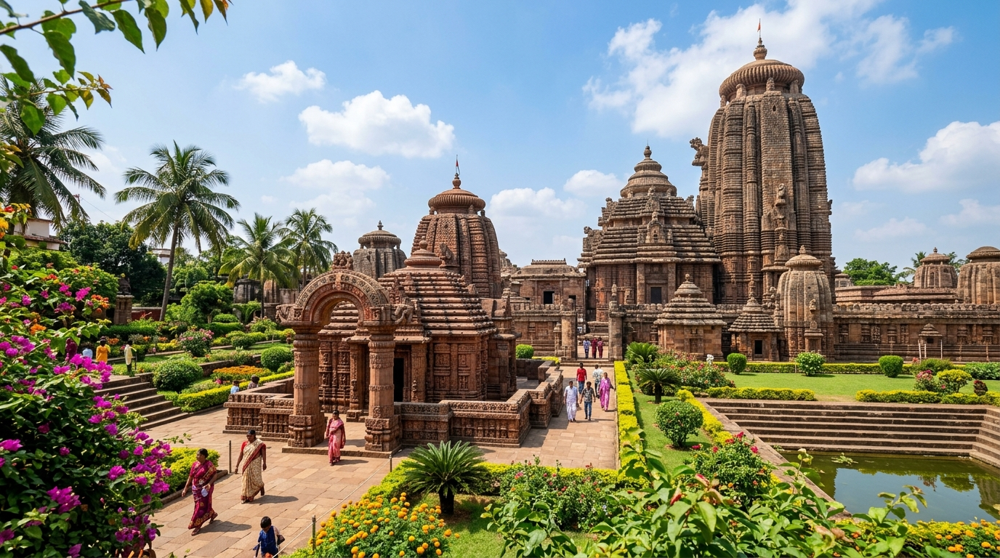
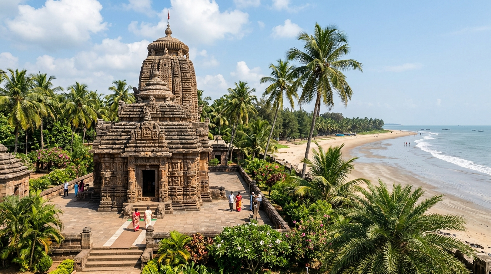
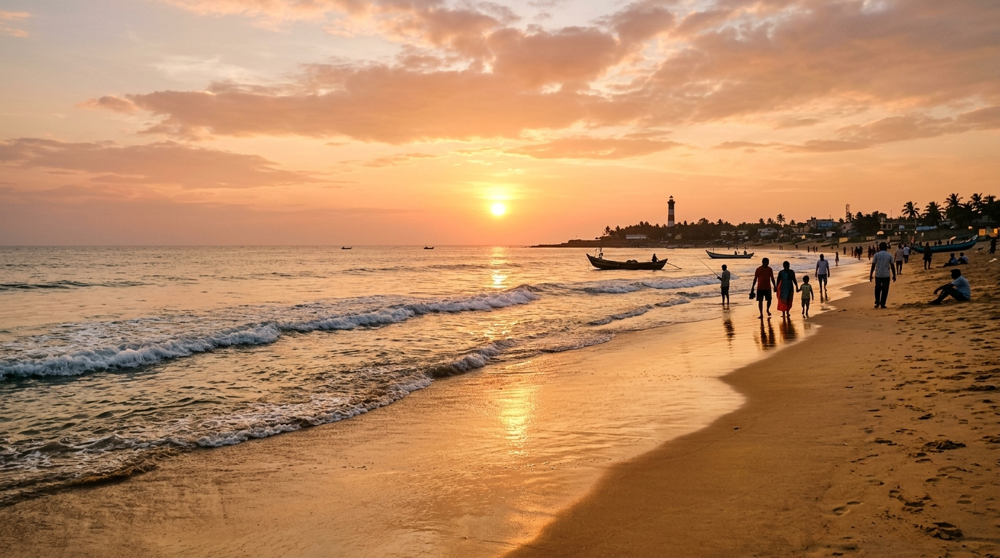
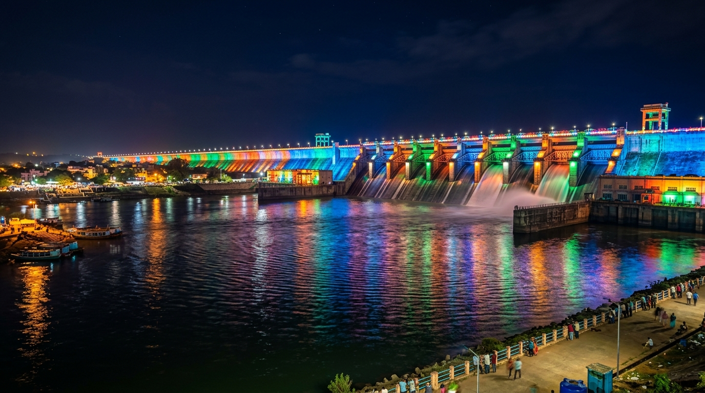
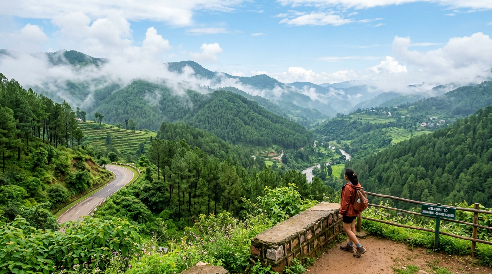
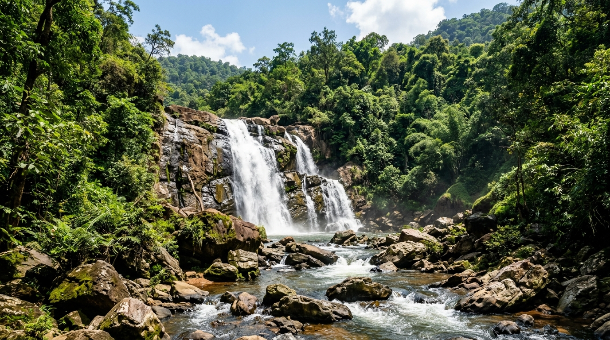
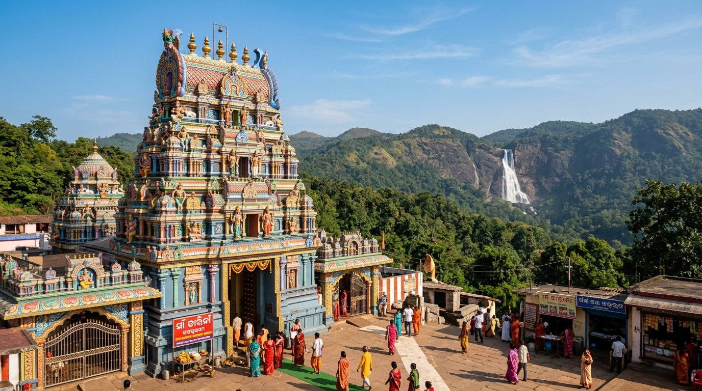

From sacred temple rituals to serene Golden Beach sunsets, explore the top attractions and cultural treasures of Puri Dham.
The 12th-century sacred abode of Lord Jagannath, Balabhadra, and Subhadra. One of the Char Dham pilgrimage sites of India.
Blue Flag certified golden sand beach famous for sunrise views, sea bath, evening beach market, and sand art displays.
The garden house of Lord Jagannath where the deities reside during the annual world-famous Ratha Yatra festival.
Ancient Lord Shiva shrine in Puri where the Shiva Lingam remains submerged in water, revealed during Pankoddhar Ekadasi.
World's largest open-air food market inside Jagannath Temple offering sacred 56 Bhog Mahaprasad cooked in earthen pots.
Famous artisan village near Puri renowned for traditional Pattachitra paintings, palm-leaf engravings, and wooden toys.

Puri is a coastal district in Odisha, India, located along the Bay of Bengal. It is renowned for its religious and cultural significance, particularly as the home of the famous Jagannath Temple, a major Hindu pilgrimage site. The district is known for its annual Rath Yatra, where Lord Jagannath, along with His siblings...

The Konark Sun Temple is a famous temple in Odisha, India, built in the 13th century. It was made to honor the Sun God (Surya) and is shaped like a giant stone chariot with 24 big wheels and seven horses. The carvings on the temple show the amazing skill of ancient Indian artists. The temple is also a UNESCO World Heritage Site...

Bhubaneswar is the capital city of Odisha, located in the eastern part of India. Known as the "Temple City of India," it is famous for its ancient temples, including the Lingaraj Temple, Mukteshwar Temple, and Rajarani Temple, which showcase the architectural beauty of the Kalinga style. The city is a bustling urban hub...

Balasore is a coastal district in northeastern Odisha, India, known for its Chandipur Beach, where the sea recedes during low tide. It is an important center for defense research, hosting the Integrated Test Range (ITR) at Chandipur. The district's economy thrives on agriculture, fishing, and manufacturing...

Ganjam is a coastal district located in the southern part of Odisha, India. It is known for its rich cultural heritage, scenic beaches, and historical significance. The district's economy is primarily based on agriculture, fishing, and handicrafts, with betel leaves, cashew nuts, and seafood being key products...

Sambalpur is a city and district located in the western part of Odisha, India. Known for its cultural heritage and historical significance, Sambalpur is famous for its traditional Sambalpuri sarees and textile industry. The district is also known for its rich handicrafts, including ikat weaving, and the majestic Hirakud Dam...

Daringbadi is a scenic hill station located in the Kandhamal district of Odisha, India. Known as the "Kashmir of Odisha" for its cool climate and lush landscapes, Daringbadi is famous for its picturesque valleys, waterfalls, and pine forests. It is a popular tourist destination, offering natural beauty and serene climate...

Mayurbhanj is a district located in the northern part of Odisha, India, known for its rich cultural heritage, natural beauty, and wildlife. The district is home to the Simlipal National Park, a major wildlife sanctuary that is part of the Simlipal Tiger Reserve and known for its diverse flora, fauna, and majestic waterfalls...

Keonjhar, Odisha, offers diverse attractions including the towering Khandadhar Waterfall and the serene Gundichaghagi and Bhimakunda waterfalls. Key destinations also feature the sacred Maa Tarini Temple, the historical Sitabinji Fresco Paintings, and the scenic Hadagarh Reservoir...